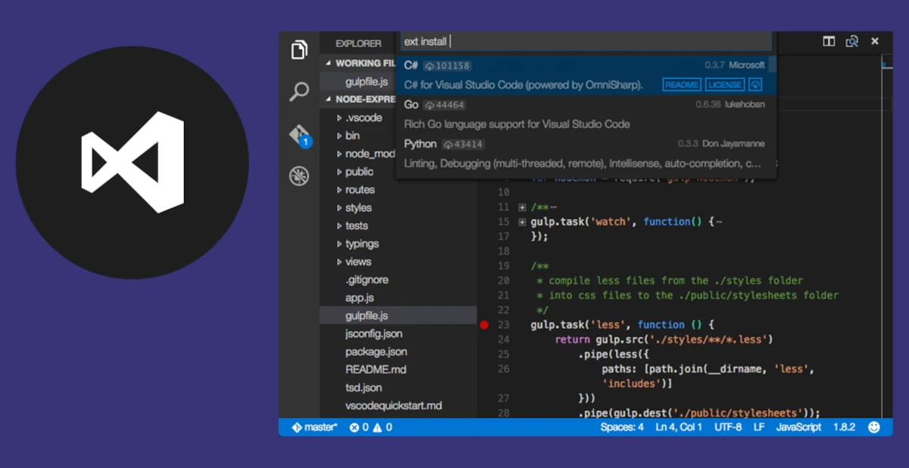

Visual Studio Code

Visual Studio Code es un editor de código fuente desarrollado por Microsoft para Windows, Linux, macOS y Web.
Incluye soporte para la depuración, control integrado de Git, resaltado de sintaxis, finalización inteligente de código, fragmentos y refactorización de código